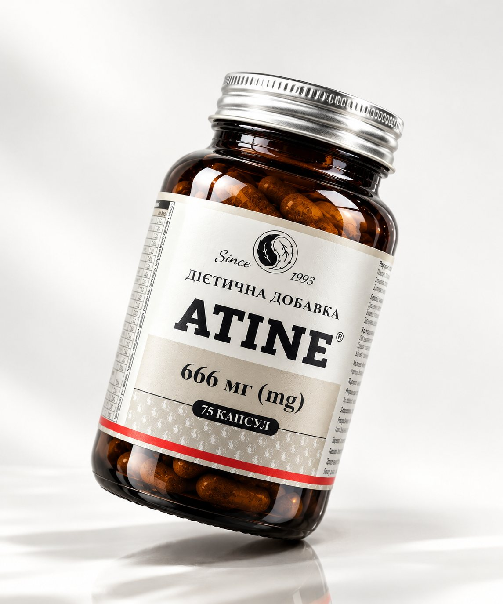
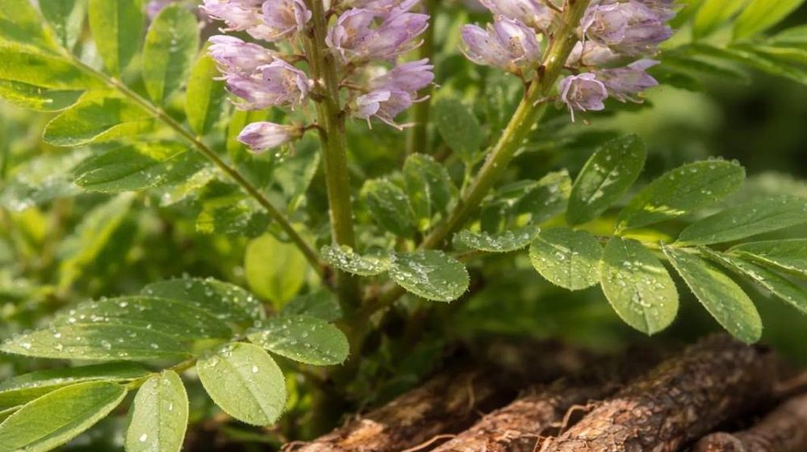
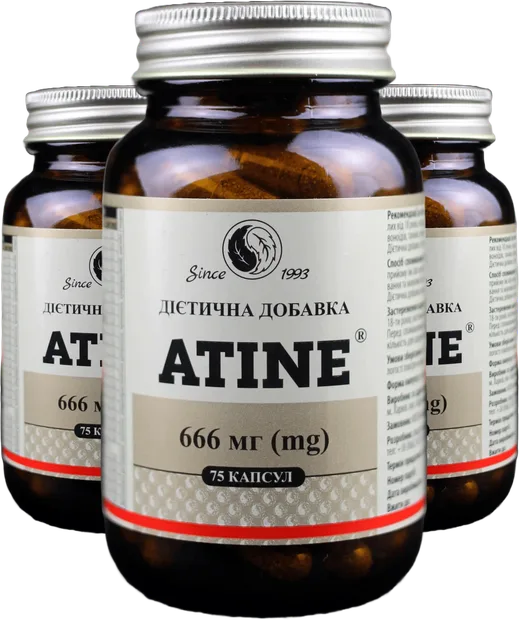
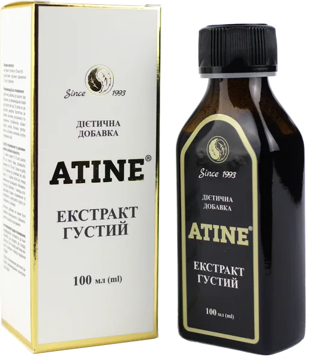
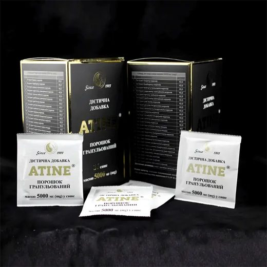

Нервова система
Хронічний стрес, погіршення сну, виснаження під час тривалої терапії.
Компоненти, що підтримують рівнішу реакцію на стрес, кращий сон і відчуття відпочинку.
Стандартизований екстракт 26 лікарських коренів, виготовлений на фармацевтичному заводі. Допомагає організму легше переносити навантаження лікування — разом із терапією, яку призначив ваш лікар.

КупитиПротипухлинна терапія — це тривале навантаження не лише на пухлину, а й на нервову систему, клітини та сили людини. ATINE не замінює лікування, а допомагає організму його проходити.
Хронічний стрес, погіршення сну, виснаження під час тривалої терапії.
Компоненти, що підтримують рівнішу реакцію на стрес, кращий сон і відчуття відпочинку.
Лікування створює додаткове навантаження на клітини і тканини.
Антиоксидантна та протизапальна підтримка рослинних екстрактів.
Напрям, який зараз активно досліджують у лабораторіях.
Доклінічні дані 2025–26 і відкриті наукові публікації.
| Звичайний фіточай | ATINE | |
|---|---|---|
| Сировина | Листя, квіти, суміш трав | Лише корені й кореневища 26 рослин |
| Дозування | «На око» | Точна доза кожного екстракту за ТУ |
| Виробництво | Фасування трав | Фармацевтичний завод |
| Дослідження | Немає | 4 лабораторні моделі, 5 публікацій |
| Застосування | Самостійно | За погодженням з лікарем |
Що таке ATINE, як приймати, чи поєднується з лікуванням. Простими словами.
Розділ для пацієнтів
Фітохімічний профіль, доклінічні дані, протоколи супроводу і регуляторний статус.
Розділ для лікарівATINE побудований на мультитаргетній логіці: 26 коренів спрямовані не на одну мішень, а на систему процесів, які страждають під час тривалого лікування. Натисніть на вузол, щоб побачити, що вже встановлено, а що лишається гіпотезою.
У клініко-лабораторних спостереженнях описано підвищення активності NK-клітин і нормалізацію співвідношення CD4+/CD8+. Дані спостережні й потребують підтвердження в контрольованих дослідженнях.
П’ять етапів, які описали лабораторії у 2025–2026 роках на густому екстракті ATINE. Коротко і зрозуміло — повний науковий опис у розділі «Наука».
Активні речовини екстракту проникають усередину клітини й змінюють її внутрішню «логістику» — так клітина отримує сигнал до перебудови.
Повний розділ «Наука»Оберіть формат, який краще вписується у ваш режим лікування та відновлення. Форми відрізняються способом прийому та концентрацією; схему погоджуйте з лікарем.

Гранульований чай розчиняється у теплій воді та п’ється невеликими порціями. Коли потрібна м’яка підтримка, гідратація й форма напою замість таблеток.



Найбільш концентрована форма. Дозу відміряють краплями або чайною ложкою, додаючи до води; зручно точно налаштувати добову кількість з лікарем.

Високо стандартизований порошковий екстракт на основі 26 коренів у зручних саше.
Технічні умови, патенти, торговельні марки в трьох юрисдикціях і відкриті наукові публікації. Усе можна перевірити.
Лікар — хранитель рецептури, професори, що провели наукову верифікацію, і рецензенти монографії ATINE®.
Лікар, фітотерапевт, хранитель рецептури ATINE
Автор формули з 26 коренів, 33 роки клінічної практики
«Онкологічний пацієнт заслуговує не на чергову обіцянку, а на максимально чесну відповідь: що ми вже знаємо і чого ще не знаємо.»
Доктор медичних наук, професор
Патологічна фізіологія; співавтор монографії ATINE®
«Спочатку я був скептиком. Але результати досліджень in vitro та in vivo змінили мою думку.»
Доктор медичних наук, професор, заслужений діяч науки і техніки України
Рецензент монографії ATINE®
«Монографія поєднує традиційну фітотерапію зі суворими стандартами молекулярної біології та патологічної фізіології.»
Залиште заявку — ми зв’яжемося, розповімо про ATINE і допоможемо обрати форму та орієнтовну схему, яку ви узгодите зі своїм лікарем.
Цей сайт не призначений для забезпечення діагностики, лікування або медичних порад. Інформація на цьому сайті надана лише з інформаційною метою. Будь ласка, проконсультуйтеся з лікарем про будь-які медичні та пов'язані зі здоров'ям діагнози та методи лікування. Інформація на цьому сайті не повинна розглядатися як заміна консультації з лікарем. Заяви, зроблені про конкретні товари на цьому сайті, не підтверджені для лікування, діагностики або запобігання хворобам.
ATINE — добавка дієтична. Не є лікарським засобом. Не замінює протипухлинне лікування.